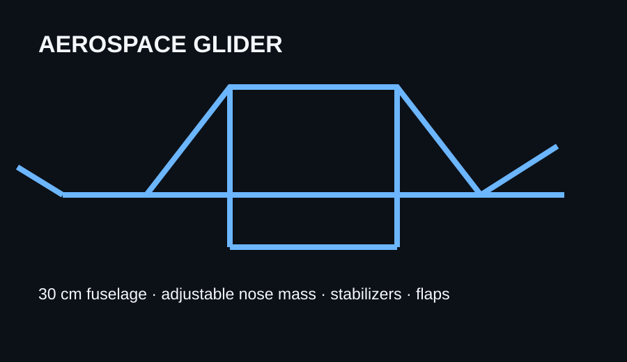
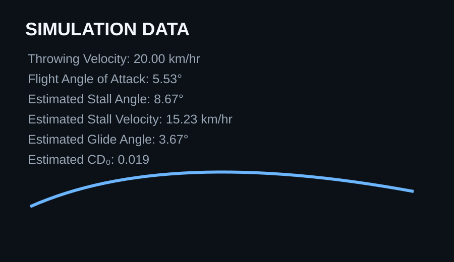
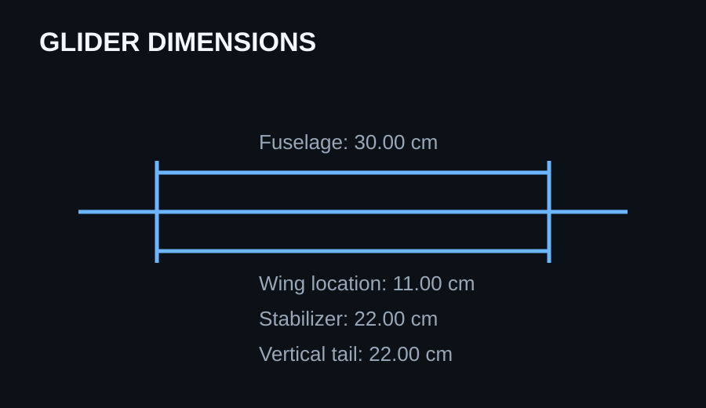
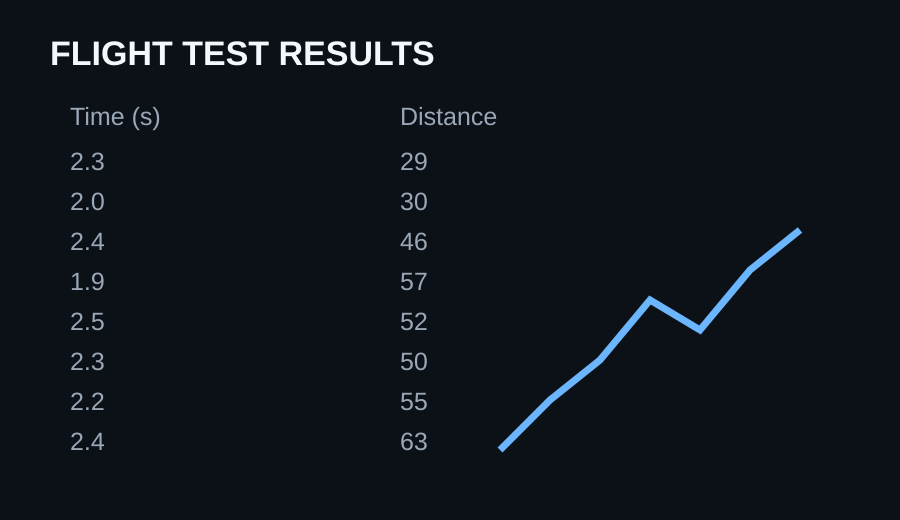

Glider Design & Flight Testing
Summary: I designed and built a glider independently, then tested how changes to its mass distribution, launch angle, stabilizer, and flaps affected flight performance. After several unsuccessful launches, I used the results to iterate on the design and increased the best recorded distance from 30 to 63.
My process
I started with a 30 cm fuselage and used aerospace simulation data to study angle of attack, stall angle, stall velocity, glide angle, and drag. Early tests produced distances of 29–30, so I adjusted the nose mass and launch angle before making smaller changes to the vertical stabilizer and adding flaps.
Solution & impact
The final design flew successfully and reached a best recorded distance of 63. That was a 33-unit increase, or 110% improvement over the initial 30-unit result.
Tools
Aerospace simulation software · Physical glider prototype · Flight testing · Aerodynamics · Measurement/data collection · Iterative design


